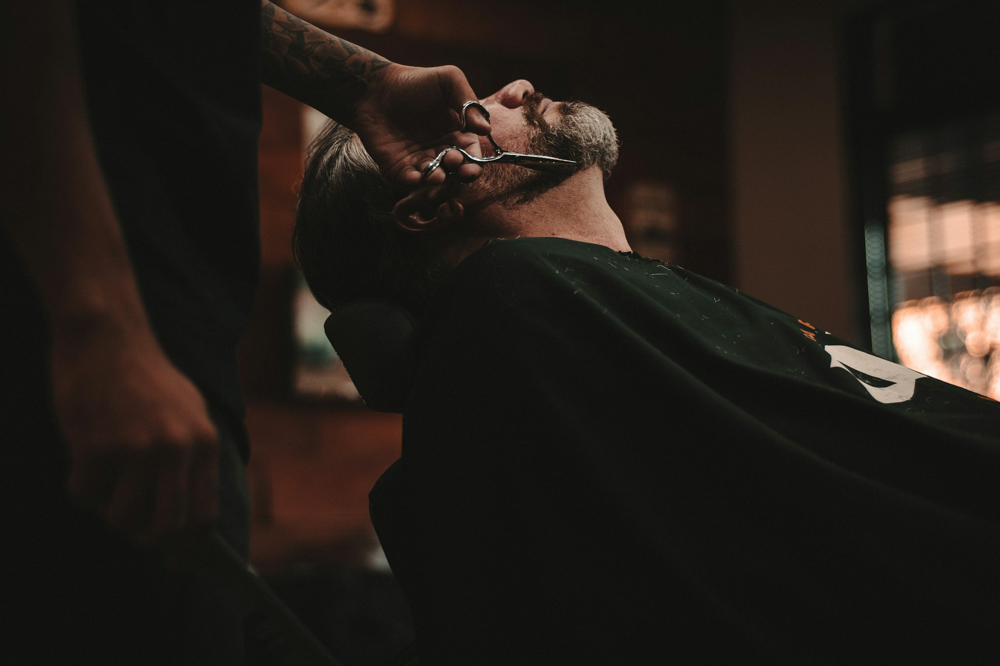
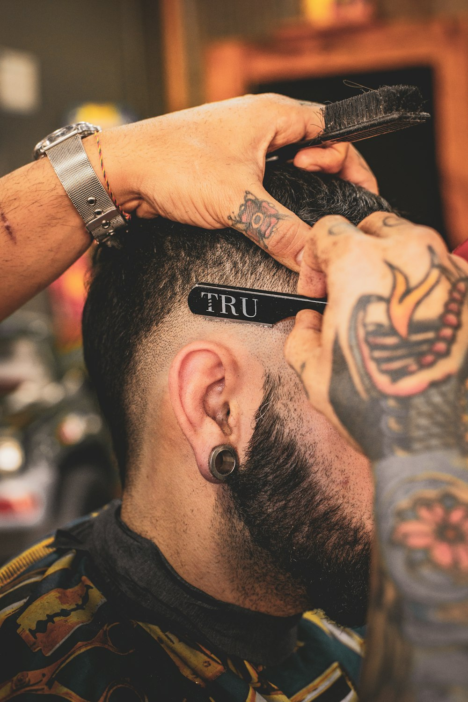

Corte clássico
Tesoura, máquina e precisão. Um corte que respeita o seu estilo.

TRADIÇÃO NO GESTO. ESTILO NA ESSÊNCIA.
Cuidado que respeita a sua essência.
Estilo que conta a sua história.

01 / NOSSA ESSÊNCIA
Uma boa barbearia é mais que um endereço. É um lugar onde você desacelera, se reconhece e sai pronto para o que vem pela frente.
No universo BARBER & CO., a precisão dos cortes clássicos encontra um olhar atual. Cada conversa, cada gesto e cada acabamento fazem parte de um ritual pensado para você.
02 / O NOSSO OFÍCIO
Do clássico ao contemporâneo, o essencial
é fazer você se sentir bem.Valores ilustrativos para este projeto.
Tesoura, máquina e precisão. Um corte que respeita o seu estilo.
Desenho, toalha quente e acabamento para um ritual completo.
Uma experiência de cuidado, do primeiro detalhe ao último fio.
Contornos definidos para manter o visual sempre em dia.
Hidratação e cuidado sob medida para cabelo e couro cabeludo.
03 / UM OLHAR DE PERTO
Um pouco do universo que nos inspira.Fotografias ilustrativas · barbearia fictícia · toque para ampliar
04 / A EXPERIÊNCIA BARBER & CO.
Escuta atenta e atendimento personalizado. Seu estilo é o ponto de partida.
Técnica, repertório e dedicação em cada movimento. Do corte ao acabamento.
Um ambiente acolhedor, boa conversa e uma pausa que faz parte do cuidado.
Produtos selecionados para valorizar os fios e prolongar o resultado.
05 / BOA COMPANHIA
Depoimentos fictícios, criados para ilustrar a proposta da marca. Não representam avaliações reais.
O tipo de lugar em que o tempo passa diferente. Você chega para um corte e sai com o dia renovado.
Do atendimento ao acabamento, tudo tem intenção. É sobre encontrar um estilo que faz sentido para você.
06 / RESERVE O SEU MOMENTO
Modo demonstração · WhatsApp ainda não configurado.
Terça a sexta 09h — 20h
Sábado 09h — 18h
Domingo e segunda Fechado